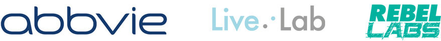

Today we live in a world where there is more health advice and information available to us than ever before. Yet despite this, the NHS still spends £11 billion annually on managing ill health caused by lifestyle choices, with £150 million spent on late diagnoses of cancer alone.
So why is this?
AbbVie, a global biopharmaceutical company, has made it its mission to find out. First, AbbVie teamed up with leading UK think tank, 2020health, to reveal that the ‘Fear of Finding Out’ or ‘FOFO’ is a major psychological barrier preventing people from seeking medical advice, even when they have worrying health symptoms. To address this, AbbVie convened Live:Lab – a group of leading thinkers from the worlds of creativity, data, tech and healthcare to create a dynamic, gamification of an online survey. The aim of the survey was to capture valuable, anonymous open-data from UK adults to better understand how they engage with their health and ultimately, help us understand what lies behind the ‘Fear of Finding Out’.
And this is where you come in…
We want to bring together some of the best coders, makers, developers and designers to delve into this newly captured open-data, to come up with mobile/app/tech solutions which encourage people to engage with their health and tackle their FOFO.
For example, one key finding identified what the feeling of ‘control’ meant for people when it comes to their health. Whilst we know that access to health information and technology gives us more control over our health, what digital solutions can empower people to proactively take control of their health? Come up with a winning idea and you could make a real difference to the health of the nation.
What is the data?
The data set has been captured by an online quiz called ‘Crush Your FOFO’, which was released to the general public earlier this year. The quiz explored the Fear of Finding Out – including people’s perceptions of control over their health, personal priorities and likelihood of seeking medical advice when they needed it, and more. And the results are surprising! People taking part in the brief will be given more findings from the brief on the day.
Who can take part?
We are looking for hackers, technologists, data scientists, students – anyone with an interest in potentially finding a way to help the nation take control of its health!
What to expect?
The two-day event will have a relaxed feel with a competitive edge! We want you to get creative with insights and the new bank of open-data to find trends and identify ways of helping people over. You will be working in groups to come up with prototypes and concepts which you will present to the jury on the second day, after which the winner will be announced.
Breakfast and refreshments provided over the course of the two days.
The winning prototype
The judging panel will comprise of a number of esteemed thinkers from the worlds of health and data. The panel will select a winning idea – the prize for which will include the latest technology and the opportunity to attend an exclusive stakeholder networking event to present the prototype to industry leaders later in the year.
So make sure you bring some of your best ideas!
To apply to take part in the hackathon click the button below. We would love to hear what you think needs to be hacked or fixed, and your ideas around data driven solutions to the health challenges we face.
A hackathon is best described as an invention marathon where participants work together in teams to create prototype projects to solve a specific challenge. Participants collaborate and share skills, learn new things and have an awesome time! All skill levels are very welcome.
In this context, hacking means building apps, websites and services really quickly to prove the value in an idea. Nothing malicious, nothing illegal.
As organisers, we’ll do our best to encourage and facilitate teamwork across the two-day hack.
All IP generated at the Live:Lab hackathon belongs to the developer. However, to generate the widest benefit from this event, we encourage developers to provide Open Source licenses for the results of their creativity.
While you can explore ideas before the day and produce designs, you cannot write a line of code for your project before the event itself.
All participants will need to bring their laptop, charger(s) and any other devices they wish to work on.
No problem! Get in touch with julia@rebellabs.co.uk
Yes, this event is following the Rebel Labs Code of Conduct. All attendees, sponsors, partners, volunteers and staff at Hackyourfofo are required to comply with these codes. The organising team will enforce these codes throughout the event. We expect cooperation from all participants to ensure a safe and comfortable environment for everybody.
Live:Lab is a collective of unique collaborators, including some of the world’s leading health, tech and creative minds. Over the next year, they will be researching ways to help adults, aged between 40 and 60 years old, overcome the ‘Fear of Finding Out’ and take control of their own wellbeing.
The collaborators will work in stages, firstly interrogating crowd-sourced lifestyle data and then using their diverse expertise to translate this into an accessible ‘engagement’ solution, for people to use with the hope of improving the health of the nation and building a more sustainable NHS for everyone.